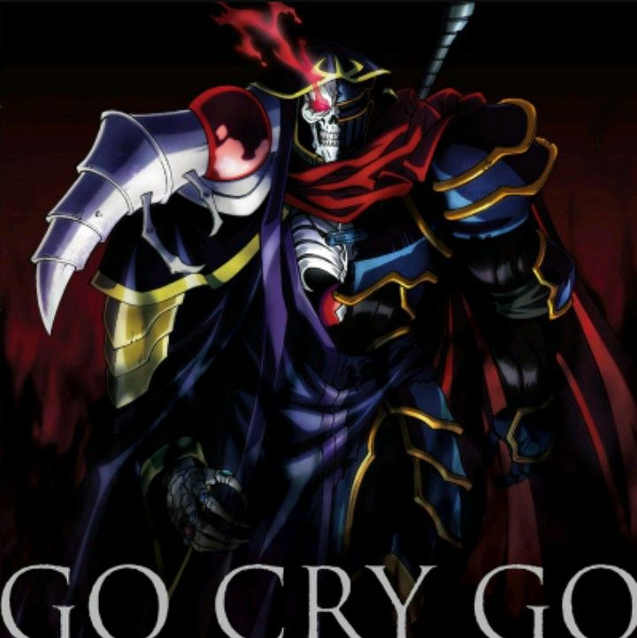

Formerly known as Momonga is the main protagonist of the Overlord series. He is the guild master of Ainz Ooal Gown, Overlord of the Great Tomb of Nazarick and the creator of Pandora's Actor. He is regarded as the highest of the Almighty Forty-One Supreme Beings by the NPCs of Nazarick.
In the New World, he is the Sorcerer King of the Sorcerer Kingdom and the most powerful magic caster in the world. His other identity is famously known as "Momon," a dark warrior and leader of Darkness, an adamantite ranked adventurer group of that nation. He is an adamantite class adventurer and the strongest adventurer known in E-Rantel.
In the year of 2138 before taking on the name of Ainz Ooal Gown in the New World, Momonga was his original name as a player in YGGDRASIL. But in reality, he was a human being by the name of Suzuki Satoru, his true identity. Whenever Suzuki left home while heading to his workplace, he wears an air filtering mask and goggles to prevent himself from being affected by the toxic air outside. 
Somewhere during his lifetime, Suzuki lost his mother due to fatigue as she overworked herself to death. Her death occurred in the kitchen of Suzuki's home, where she collapsed on the floor. She was pushing herself to make his favorite dish before this horrific event took place. He vividly remembers seeing it happen with his own eyes in the morning upon waking up. In terms of receiving fatherly love from his dad, he noted to have never experience something like that before in his life.